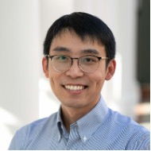
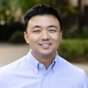
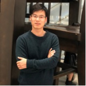

People
Bingling Huang, Ph.D.
Dr. Bingling Huang is an Assistant Professor of Mechanical Engineering at California State University, Fullerton (CSUF), where she directs the Design for Intelligent Systems and Learning Laboratory (Design-is-ALL). She holds a Ph.D. in Mechanical Engineering and an M.S. in Computer Science from University of Southern California (USC), along with an M.S. in Aeronautical Engineering and a B.Eng. in Aircraft Design and Engineering from Beihang University (BUAA).
Her research focuses on design, self-organizing robotic and manufacturing systems, swarm intelligence (SI), multi-agent reinforcement learning (MARL), physics-constrained deep learning and trustworthy artificial intelligence (AI).
Dr. Huang received 2026 Honda Corporate Programmatic Funding from American Honda Motor Co., Inc. as Principal Investigator. She has been recognized with the 2026 CSU Chancellor's Early-Career Faculty Fellowship and the 2025 ASME Advancing Engineering Profession Service Award. At CSUF, she received the 2026–2027 Engaging Graduate Students in Research, Scholarly and Creative Activities Award, the 2025–2026 ECS Incentive Grant, and the 2024 ECS Research Innovation Challenge Award in Advanced Manufacturing. During her doctoral studies, she held the 2018 Annenberg Fellowship at USC.
She stays engaged with the professional community, serving ASME's International Design Engineering Technical Conferences (IDETC-CIE) as General Conference Organizing committee member and Local Chair in 2025 (Anaheim); as Program Chair for Mechanisms and Robotics (MR) in 2026 (Houston). Besides, she chaired oral session at the 2024 Southern California Conference for Undergraduate Research. She also reviews for venues including Advanced Engineering Informatics, Design Science, Computers & Industrial Engineering, PLOS ONE, AIEDAM, Neurocomputing, and ASME IDETC-CIE.
Earlier, she interned as a Ph.D. Machine Learning Engineer at Meta.


